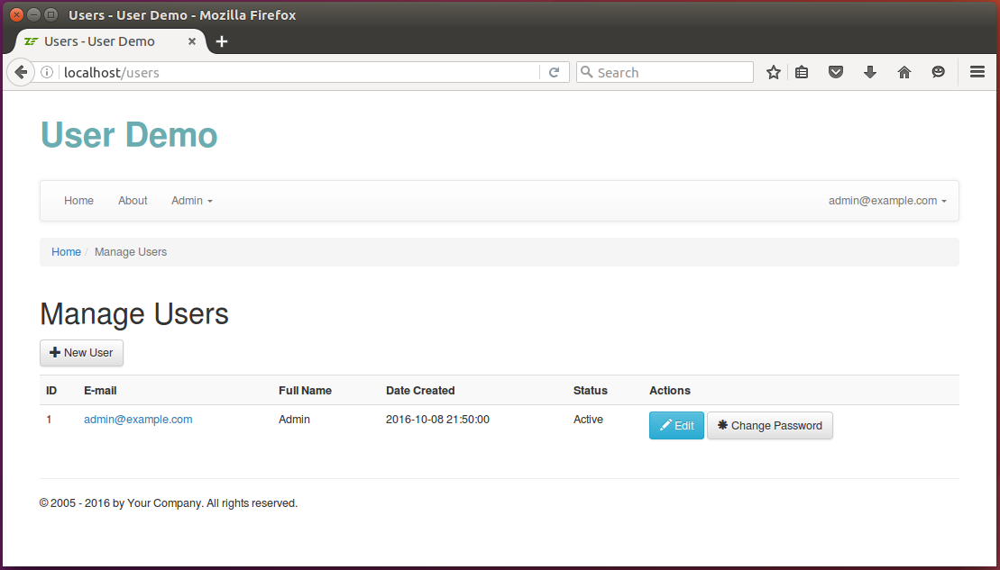
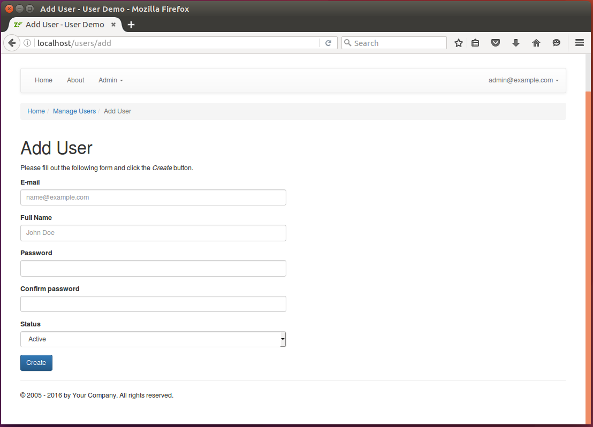
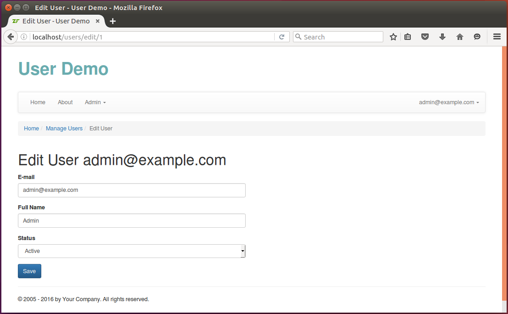
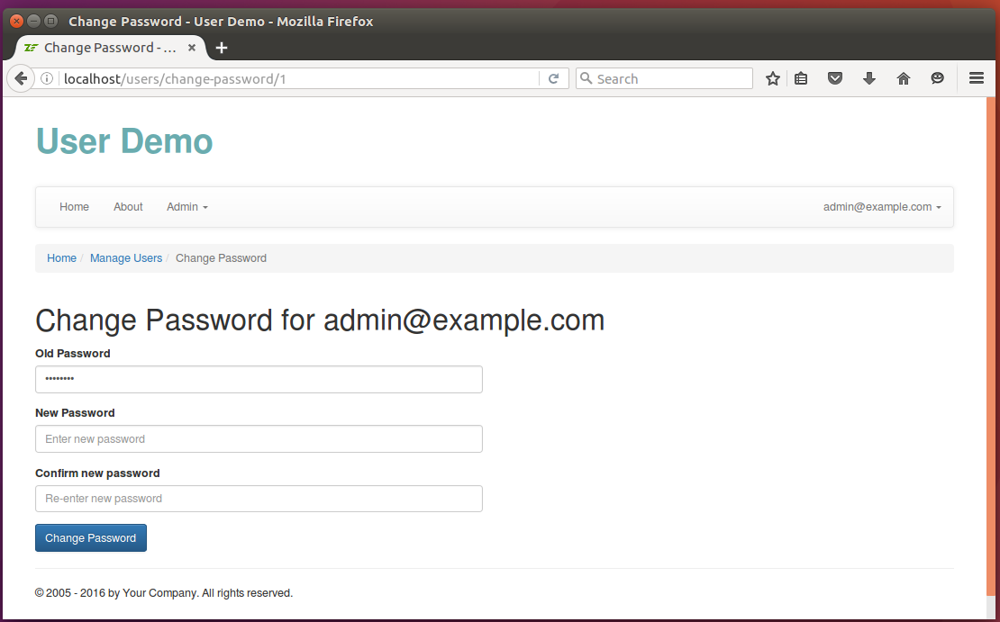

16.5. Добавление UserController
Класс UserController будет содержать несколько методов действия, предназначенных для
предоставления интерфейса администратора. У него будут следующие действия:
- Действие
indexAction(), которое будет отображать веб-страницу, содержащую список пользователей (см. рисунок 16.3). Наберите в адресной строке своего браузера "http://localhost/users", чтобы перейти на эту страницу. - Действие
addAction(), которое будет отображать страницу, на которой можно создать нового пользователя (см. рисунок 16.4). Наберите в адресной строке своего браузера "http://localhost/users/add", чтобы перейти на эту страницу. - Действие
editAction(), которое будет отображать страницу для обновления существующего пользователя (см. рисунок 16.5). Наберите в адресной строке своего браузера "http://localhost/users/edit/<id>", чтобы перейти на эту страницу. - Действие
viewAction(), позволяющее просмотреть существующего пользователя (см. рисунок 16.6). Наберите в адресной строке своего браузера "http://localhost/users/view/<id>", чтобы перейти на эту страницу. - Действие
changePasswordAction(), которое предоставит администратору возможность сменить пароль существующего пользователя (см. рисунок 16.7). Наберите в адресной строке своего браузера "http://localhost/users/changePassword/<id>", чтобы перейти на эту страницу. - Действие
resetPasswordAction(), которое позволит пользователю сбросить свой пароль (см. рисунок 16.8). Наберите в адресной строке своего браузера "http://localhost/reset-password", чтобы перейти на эту страницу.
 Рисунок 16.3. Страница со списком пользователей
 Рисунок 16.4. Страница добавления нового пользователя
 Рисунок 16.5. Страница изменения существующего пользователя
 Рисунок 16.6. Страница профиля пользователя
Рисунок 16.6. Страница профиля пользователя
 Рисунок 16.7. Страница изменения пароля
 Рисунок 16.8. Страница сброса пароля
Рисунок 16.8. Страница сброса пароля
Контроллер UserController рассчитан быть как можно более "тонким". Он содержит только код, отвечающий за
проверку входных данных, инстанцирование нужных моделей, передачу входных данных моделям и возврат данных
для визуализации в шаблоне представления. Так как класс UserController является типичным классом контроллера
(а также потому, что весь его код вы можете найти в примере User Demo), мы не будем описывать его более детально.